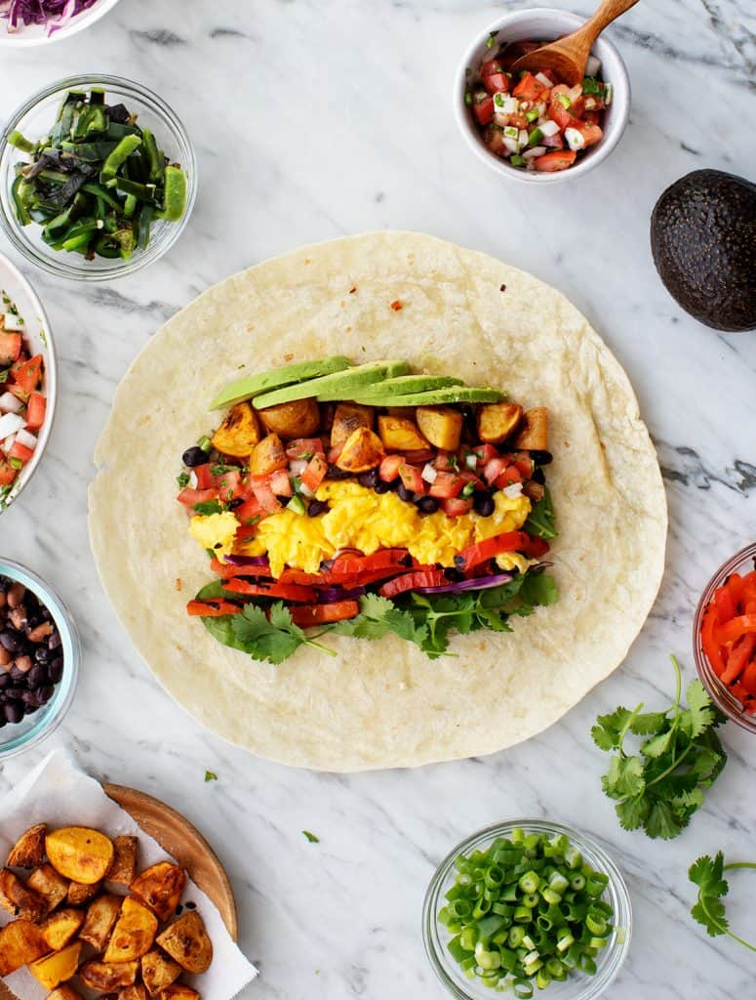

Ingredients
- "Flour tortillas - You'll need big ones! I find 12-inch tortillas
to be the easiest to roll
- Scrambled eggs - A breakfast burrito essential. They add yummy
creamy texture and lots of protein
to keep you full till lunchtime.
For a vegan variation, check out this vegan breakfast burrito recipe!
- Spicy potatoes - I roast them with smoked paprika to add bold, smoky
flavor to the filling
- Avocado - For creamy richness
- Pico de gallo - For bright, zesty flavor
- fresh fixings - shredded cabbage, roasted red peppers, black beans, cilantro,
and spinach

How to Make
- Make sure you have big tortillas! In the store, look for 12-inch
or larger tortillas.
Often, they'll be labeled as “Burrito-Size.” These
tortillas are the easiest to tuck and
roll around all the yummy fillings.
- Lay your fillings in a (relatively) narrow strip on the tortilla.
If you
spread the ingredients out too much, you won't be able to get the
tortilla over and around them.
I start by making a thin layer of
spinach on the bottom and then spread the other
fillings in narrow
rows on top
- Tuck in the sides first. Then, fold the tortilla over the fillings and
roll it closed.
I've found this “tuck & roll” method to be the most
effective for tightly packing the filling
into the tortilla.
- Have an extra pair of hands nearby. Before I roll the tortilla closed,
I like to have Jack gently press the fillings toward my hands in
order to pack them together tightly.
That way, my burrito
turns out nice and compact. He usually helps out during this step: